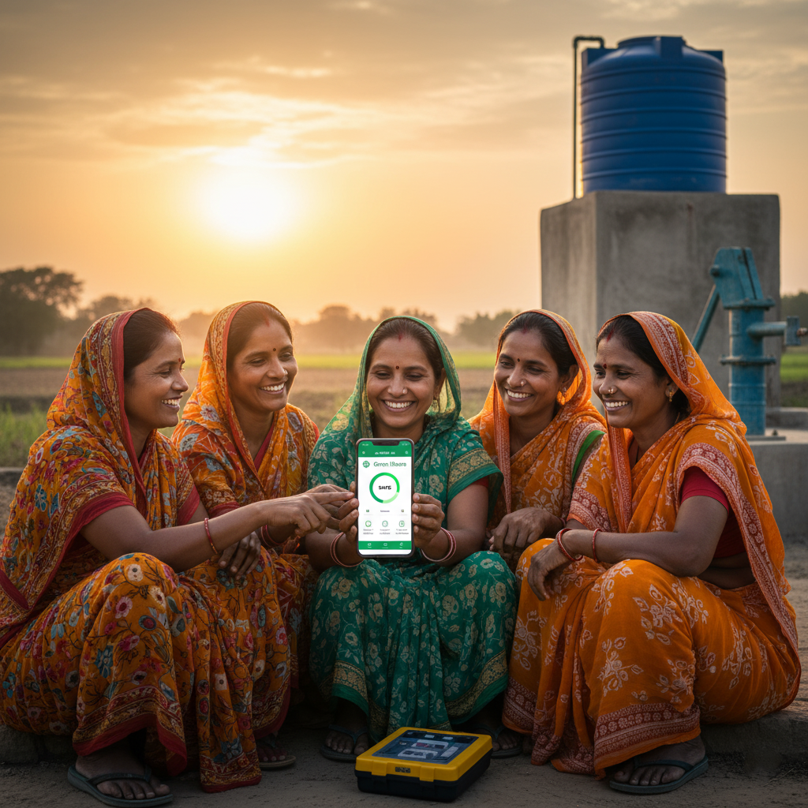

Simple, low-cost digital tools for efficient operation and maintenance of rural piped water supply systems under the Jal Jeevan Mission.
90%+
Reliable Water Supply
5,000+
Villages Covered
2,500+
Gram Panchayats
10,000+
Issues Resolved
Our low-cost digital tools make daily operation and maintenance of water supply systems simple and effective
Track pump running hours to optimize energy consumption and schedule maintenance through our simple mobile interface.
Ensure safe drinking water with easy-to-use portable testing kits. Results are digitally recorded for transparency.
Use data insights to anticipate maintenance needs before major issues occur, reducing downtime and repair costs.
Quickly identify and address leaks in the water supply system to conserve water and prevent wastage.
Plan and track routine maintenance tasks with automated reminders for timely servicing of water infrastructure.
Access all tools and data from any mobile device, even in areas with limited connectivity through offline capabilities.
Simple steps for Gram Panchayats to manage their water supply systems effectively
Register your Gram Panchayat and water infrastructure in our simple mobile app
Perform regular checks of pump operation, water quality, and system integrity
Follow recommended maintenance tasks and address issues proactively
Making a difference in rural communities through sustainable water management
Our digital tools have empowered Gram Panchayats across rural India to take ownership of their water supply systems. By providing simple, accessible technology, we're helping ensure sustainable access to clean water.
Hear from our community members about the impact of our tools
Sarpanch, Sundarpur Gram Panchayat
"Before using this system, we struggled with frequent pump failures and water quality issues. Now we can monitor everything easily and solve problems before they become serious. Our village has reliable water supply for the first time."
VWSC Member, Chandpur Village
"The water quality testing tools are so simple that even community members with little education can use them. Now we test regularly and everyone in the village feels confident about the water they drink."
Join thousands of Gram Panchayats already benefiting from our digital tools. Get started today to ensure sustainable water supply for your community.
